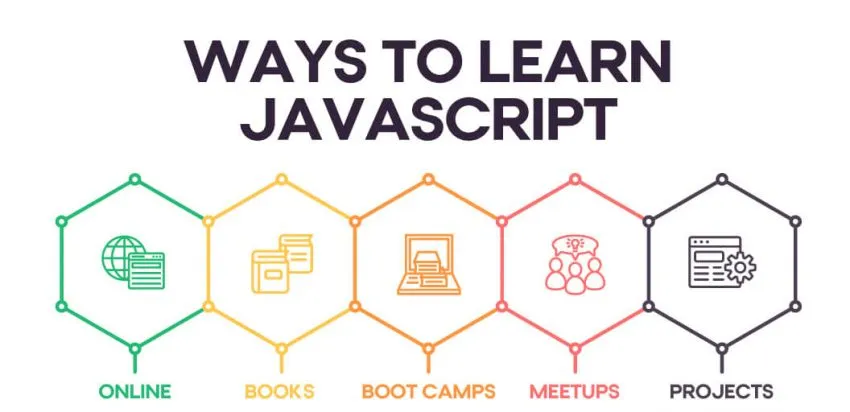

Ways to Learn JavaScript
It might be hyperbole to say that JavaScript is a developer’s best (digital) friend — but it would certainly be hard to get by without it.
According to a recent survey conducted by Stack Overflow, JavaScript is the world’s most popular programming language, with an incredible 69.7 percent of the 90,000 developers polled citing it as the most-used skill in their programming toolbox. It’s a staple skill for all manner of developers, from the most entry-level junior developers to the highest-ranked programming specialists.
The 5 Best Ways to Learn JavaScript Fast
- Self-Guided Websites and Courses
- Books
- Coding Boot Camps
- Meetups and Networking Events
- Starting Your Own Projects
The chances of a developer not needing to learn or use JavaScript at some point in their careers are slim to none; even if a job doesn’t require its day-to-day use, applicants still typically need to prove their command over it in the interview stage.
A recent report published by DevSkiller found that not only does the language top the list of the skills developers are tested on during the job search, but that “most developers will get a JavaScript IT skills assessment, regardless of their main focus.” More to the point, a full 72 percent of companies who need developers hire professionals who are proficient in JavaScript.
Like it or not, aspiring developers can’t get away from learning JavaScript. The reason is simple: It’s just too darn useful.
Curious about web development? At The Coding Boot Camp at UT Austin, you’ll learn JavaScript and other programming languages in just 12 or 24 weeks. Complete the form below to learn more.
What is JavaScript, and Why Should You Learn it?
Let’s break this down. JavaScript is typically used as a client-side scripting language for front end development. In simple terms, this means that developers use JavaScript to build the part of a website that ordinary visitors can see and interact with, also known as the “front end.” While the programming language can technically be used to create complex programs, its primary application lies in web development.
Front end programmers typically use JavaScript in conjunction with two markup languages, HTML and CSS, to create all of the elements that a user can see and interact with directly. Most common actions, such as transactions, submitting customer feedback, and even logging in, are facilitated by HTML code. CSS, on the other hand, centers more on formatting and appearance; it allows developers to describe how the HTML should look to a visitor. Both, however, are static. With only HTML and CSS, a web page is unchanging and relatively simplistic.

With JavaScript, a website becomes dynamic. Not only does it automate processes that users would, in an HTML-only site, need to perform manually, but it also empowers a website to react to a visitor’s input. Autocorrect functions, slideshows, interactive graphics: these can all be credited to JavaScript working tirelessly in the background.
That said, JavaScript’s appeal isn’t confined to its functionality. It’s also one of the most intuitive programming languages to learn and use; often, it’s one of the first that newbie developers learn when they start to code.
“JavaScript is very easy to implement,” writes one tech journalist for Web Platform. “All you need to do is put your code in the HTML document and tell the browser that it is JavaScript […] then, JavaScript allows you to create highly responsive interfaces that improve the user experience and provide dynamic functionality, without having to wait for the server to react and show another page.” It’s fast, versatile, and can even help identify and fix problems via its browser support functions.
For those reasons, JavaScript maintains a significant presence in the development sector and is a valuable skill for any aspiring web programmer. If you’re interested in growing your technical skill set, you should take the time to learn the language. Becoming a front end developer may take as little as 3 months.
Luckily, it isn’t all that hard to hone your skills. There are countless ways to learn JavaScript easily — and no, you don’t need to enroll in an undergraduate computer science program to do it. Online courses and self-led tutorials abound. If you want more structure and guidance, but don’t have the time or money to dedicate to a formal undergraduate degree, you can even enroll in a coding boot camp.